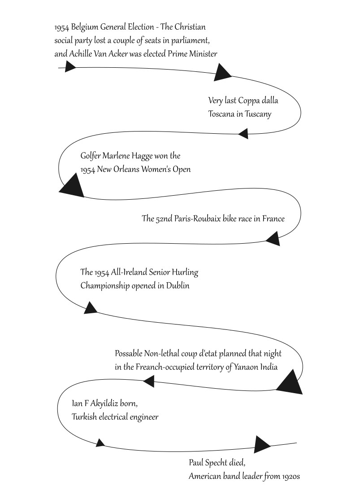

This was calculated by British computer scientist Willian Tunstall-Pedoe who developed a software called True Knowledge now known as Alexa. This software contained facts about every day since January 1 1900. 11 April 1954 is considered the most boring day as it has the least known facts associated with it. So here are the known facts about this date:
